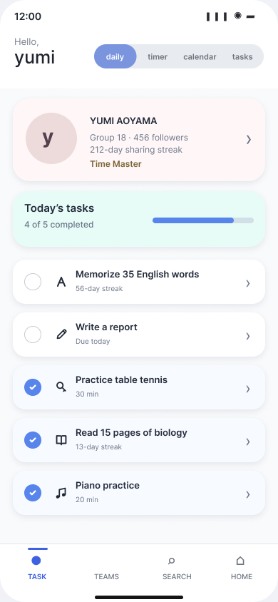
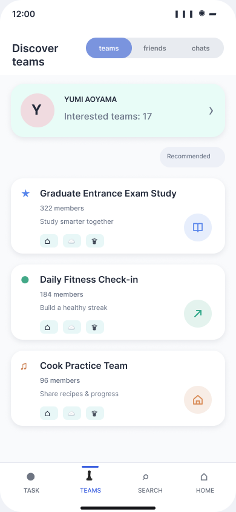
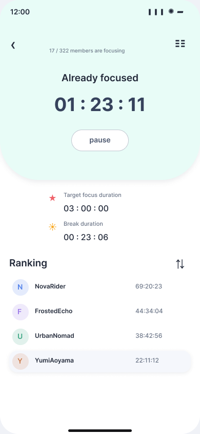

下载之后，为什么没有继续使用？
研究从一个日常现象出发：人们会下载效率工具，却很快回到纸质手账或其他管理方式。目标不是先画一个新界面，而是先理解持续使用中断的原因，再寻找可以被设计回应的机会。
先调查，再定义原因，最后提出方案。
问卷调查
了解效率工具被下载后的实际使用状态，以及用户何时停止使用。
用户访谈
进一步理解动机不足、操作不便和既有习惯等行为背后的原因。
案例分析
比较数字工具与纸质时间管理方式，识别不同媒介提供的反馈与坚持机制。
说明：现存演示资料保留了方法和比例结果，但没有记录样本量、受访者画像及访谈原话。因此本案例把这些结果作为早期探索依据，而不是普遍性市场结论。
持续一个月以上的使用者，只占初步调查的 10.7%。
超过一半的受访状态集中在“偶尔使用”与“下载后几乎不用”。这提示问题并不只是缺少某个功能，而是产品没有持续产生足够明确的价值与动机。
比例来自原始研究演示资料。因缺少样本量记录，仅用于呈现当时的探索性发现。
效率工具难以被长期使用，通常与这三个障碍有关。
独自管理任务时，完成反馈容易变得机械，目标也很难持续保持在注意力中心。
过多设置与分散功能增加操作成本，用户很难快速回到当天真正需要完成的事情。
纸质手账等既有方式拥有低门槛和清晰反馈，新工具必须提供无法轻易被替代的价值。
SHARE：把个人专注与同伴支持放在同一个系统里。
自律，也可以是一种轻量的社交关系。
SHARE 让用户记录任务、专注时间和日历，同时加入围绕共同目标建立的团队。在线自习室、进度分享、聊天和达成度反馈，使其他人的存在成为支持与力量。
任务、计时与日历保持清晰，让用户仍然拥有自己的安排方式。
通过主题团队找到目标相似的人，让坚持获得社会性反馈。
在线自习室与轻量交流提供在场感，不把社交变成新的任务。
从建立任务，到找到同伴并共同坚持。
设定当天需要完成的事项。
记录时间与投入过程。
寻找拥有相同目标的用户。
与同伴同时开始专注。
查看彼此的进度与记录。
通过竞赛与反馈保持动力。
极简清晰的画面，让任务与团队功能一目了然。



低饱和色彩分区
用薄荷、粉与蓝色区分不同功能，并以更明确的蓝色强调主要操作。
任务与社交清晰分区
用户可以在个人管理与团队协作之间切换，选择更适合自己的使用方式。
多种持续反馈
完成状态、专注时长、团队动态与日历记录共同呈现每一步进展。
一次并不成熟，却影响了我之后创作方向的大学项目。
大学时期的尝试
- 从问卷与访谈理解效率工具难以持续使用的原因
- 把个人管理与同伴支持放进同一个产品框架
- 独立完成从研究、流程到高保真界面的设计
- 也留下功能较多、后续验证不足等问题
从 SHARE 到 Guild Log
SHARE 不是一个成熟的产品方案，但它让我开始持续思考：怎样让用户更长期地投入效率工具，并在完成任务之外获得兴趣与情绪反馈。这个问题后来也成为 Guild Log 的出发点。